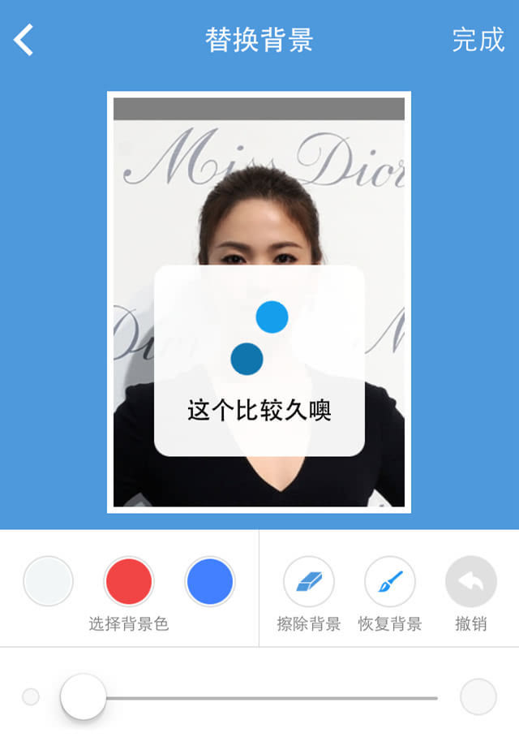

今や私たちのスマートフォンの中のAPPは私たちの生活の一部となっています。使い慣れてくるにつれて、APPにも骨があり、肉があり、皮がある生命体であることに気づきます。多くの人が体験や手触りについて語りますが、ではAPPの良し悪しの体験とは一体何なのでしょうか。この感覚の違いは一体何によって生じるのでしょうか。そして私たちはどうAPPを設計すればよいのでしょうか。
以下では、証明写真系APPの代表3つ、「智能证件照」、「最美证件照」、「证件照」を3つの次元で分析します。証明写真系APPは主に携帯のスマートフォンを利用して証明写真を撮影・作成し、従来の写真館ではユーザーが証明写真をコントロールできない、外出して写真館を探して撮影するのが面倒といった問題を解決します。これはツール系アプリに当たるため、ユーザーの問題を実際に効率的に解決できるかどうかに対する要求が非常に高いです。そこでAPPを深く解剖し、骨相、肉相、皮相の3つの次元から観察します。

一、骨相
「虎を描くのに皮を描くのは易しく、骨を描くのは難しい」ということわざがあるように、APPの最も基本的なものはその論理フレームワーク構造です。これは建物の中の鉄筋フレームのようなもので、建物全体を支えています。構造が強ければ強いほど、建物はより多くの機能を支えられます。例えば、以下のようにフレームワークの中核が異なれば、造れる建物も異なります：

では、それぞれの骨相が一体どうなのか見てみましょう。

「智能证件照」の論理フレームワークは全体的に均整がとれて対称的で、APPの構造が安定していればいるほど、その上に機能を拡張し、付け加えるのも自然になります。最初の撮影ページから最後の証明写真作成完了まで、プロセス全体に冗長な操作がほとんどなく、ユーザーは水を飲むように一気にスムーズに操作できます。

「最美证件照」の構造は全体的に見ても流暢でスムーズですが、よく見るとAPP設計の多くの欠点を見せています。欠損、関節の絡まりです。まず最初のページを見ると、「制作」と「注文」。ユーザーが最も多く使うのは制作・撮影機能で、一番下の注文はユーザーがほとんど使いません。ユーザーがクリックしても、進めずにすぐ戻ることになるでしょう。この使用頻度の大きな対比により、注文という枝は足が欠けたように全く役に立たず、冗長性が生じるだけでなく構造のバランスを崩し、構造の上に被さる機能の脆弱さを露呈しています。だからこの部分は削除！最初から撮影ページに直接入るべきです。次に、最上部に突出しているAPPアルバムと書き出しの部分を見ると、詳しく分析すると、「最美证件照」にはローカル写真をアップロードして美顔処理する機能がないことが分かります。それ自身が持つアルバムは、ユーザーが撮影した後に内部に保存された写真に基づくものです。ここで論理の混乱が生じ、完璧主義のユーザーがこの機能を使うとバグだと思うでしょう。
また、保存もAPPアルバム内部に保存され、スマートフォンのアルバムには保存されません。ユーザーは多くのパスを辿って書き出しを選択して初めて実際の写真保存となります。まるで関節が絡まり、伸展がうまくいかないようです。
ローカルアルバムのアップロードはとても簡単なことのはずです。では、なぜ「最美证件照」はローカル写真のアップロードという構造を直接追加しないのでしょうか。これは後述の肉相で「智能证件照」と合わせて分析することにします。

全体的に、私たちは一目で「证件照」の構造が複雑で、多くの内容を詰め込んでいるように見えるが、実際に体験すると多くの機能が脆弱であることに気づきます。これは虚偽の膨張による空虚さという欠点を犯しています。ジョブズ氏は「Simple can be harder than complex.」と言いました。複雑さに対して、私たちはまだまだ削るべきものがたくさんあります。次に、手動切り抜きの部分の点線矢印を見ると、ユーザーが美白、背景交換、着替えの処理がうまくいかず戻る時はいつも、順序正しく前のステップに戻るのではなく、手動切り抜きというモジュールにジャンプします。これはプログラム内でgotoジャンプ文が乱用されていることを示しています（注：goto文の使い方が悪いと、鳩摩智が技を習得できず、かえって経脈が逆流したようになりやすい）。これは技術レベルの不足の表れであり、ユーザーが最後にやむを得ず直接バックグラウンドの人工PSモードに誘導されるという設計思想の源でもあります。もう一点、APP構造設計と実際の機能表示の間に存在する矛盾問題を見てみましょう。最初は証明写真の種類を選択するという道から入り、異なる証明写真には異なる標準要件があります。しかし、後の背景交換の際に、自由にさまざまな背景色が提供されます。ユーザーに関連する概念がなければ、結果として証明写真が要件を満たさないことになります。これは後期の肉相設計において、初心を忘れ、骨に逆らって成長し、病因を埋め込んだことになります。
古代には目の不自由な人が骨を触って運勢を占う者がいましたが、現代には科学者が頭蓋骨復元術を持っています。上記の骨相分析を通じて、単に論理フレームワーク図から見ると、それらは以下の構造と似ているのではないでしょうか？

二、肉相
明らかに、一つの骨格だけでは完全な人間にはなれません。人が走るためには、さまざまな筋肉の協調的な連携があって初めて爆発力を生み出し、システムの稼働を駆動することができます。
証明写真系APPが主に解決するのは、ユーザーが手軽に証明写真を作成できるようにし、撮影の専門的なハードルを下げ、写真館の背景幕から脱却し、PSによる手作業処理から脱却し、移動距離を短くすることです。ならば、その中核の筋肉群は、簡単な撮影、自動背景置換、スマート美顔、サイズ切り抜きなどの機能を実現できます。そこで、続いてそれらの肉相を分析します。

どの店の鶏肉が肉質が緻密で、外はサクサク中はやわらかく、噛みごたえがあり、ATPが豊富かには、それぞれの言い分があります。私はここで多くを評価しません。幸い、ツール系アプリはどれも技術仕事です。その「金剛鑽（ダイヤモンドドリル）」を持っていなければ、表に出す勇気はないでしょう。そこで私は外から見える構造から突破口を見つけ、いくつかの手がかりを発見します。主に背景置換という中核機能からAPPの設計を分析します。以下は、微調整処理を行っていない各アプリの自動背景置換後の効果です：

「智能证件照」 「最美证件照」 「证件照」
筋肉の構成から見ると、「智能证件照」はワンタップスマート背景置換、手動微調整の2大機能を備えています。「最美证件照」は背景置換機能がありますが、手動微調整はできません。「证件照」は自動切り抜き、手動微調整機能を備えています。筋肉の仕事の結果から見ると、「智能证件照」は背景置換後のディテール処理が比較的良好で、画像は比較的滑らかですが、局所の細部はまだ改善が必要です。「最美证件照」は背景置換がまだ改善が必要で、同時に手動微調整ができないため、背景置換に瑕疵が残ると、標準的な証明写真の要件を満たせず、ユーザー体験も大きく損なわれます。「证件照」は背景置換はまあまあですが、画像処理が滑らかではありません。筋肉の仕事の効率から見ると、「智能证件照」は背景置換技術が比較的強いものの、背景置換にかかる時間が長く、微調整ブラシが小さく、また画像を拡大できないため、ユーザー体験はやや骨が折れます。このような設計はかえってその技術の発揮を縛っています。このような細かな肉相機能設計が骨相構造設計と密接に連携しなければ、動作不良を引き起こし、血栓ができる可能性があります。「最美证件照」は背景置換にかかる時間がやや長いです。「证件照」は背景置換の切り抜き速度が比較的速いですが、ブラシで塗るような操作ではなく、クリック式の微調整を採用しているため、後期の画像ディテール微調整処理に非常に手間がかかり、画像品質に影響します。筋肉の協調性から見ると、「智能证件照」は背景置換機能の前に撮影環境スコアを追加しています。これにより、品質の良くない写真の一部を効果的に遮断、フィルタリングし、最終的な写真処理をより効率的にしています。APP設計は機能の単純な積み重ねではなく、すべて中核的問題の解決を中心にサービスされています。これこそ、周辺筋群と中核筋群が協調して組み合わさることで、強力な爆発力が生まれるだけでなく、より繊細な人間的配慮も表現できることを示しています。
最初に残した疑問、なぜ「最美证件照」には画像アップロード機能がないのか。以下のような問題が見えてきます：
ユーザーが画像をアップロードして証明写真を作成する場合、システム外の画像はさまざまで制御不能であり、システム内で生成された画像のように規範的ではありません。背景置換の段階では、システムが画像を自動認識して自動置換できます。これは明らかに技術に対する高い要求があります。では、彼らはこの問題をどう設計して解決したのでしょうか。「智能证件照」はアップロードされた画像に対して規範的なフィルタリングを行い、基準を満たさないものはKillします。「最美证件照」はさらに暴力的で、尊王攘夷、すべての外国製品を排斥します。「证件照」は非常に賢く、完全に心を開いて、トリミング用の自由な枠を提供し、手動で切り抜きます。しかし、どんな解決策も新しい問題を生み出します。「智能证件照」の半開放的な対外政策では、網をすり抜けた魚をうまく処理できず、一部の画像はアップロード後に画像枠との間に隙間が生じます。これにより完璧主義のユーザーはシステムのバグだと感じ、評判を損なうことになります。「最美证件照」の完全閉鎖設計は、最初にAPPアルバム機能を追加したことで、構造の論理矛盾を招き、骨相がねじれました。「证件照」の手動切り抜きは良いのですが、手動制御に相応の規範がなく、後続で写真サイズの切り抜き問題、画像の鮮明度の問題が発生します。この部分を最適化し、スライド式微調整を組み合わせれば、効果はさらに良くなるでしょう。彼らは画像アップロードに対して異なる解決方法を採用しましたが、ユーザーは通常自分で撮影して証明写真を作成するので、この画像アップロードはあまり役に立たず、鶏肋だと考える人もいるでしょう。しかし、私たちは肉相を設計する際に、私たちのユーザーが誰であるかを考慮したでしょうか。私たちのような写真を載せる勇気がない評価分析者たちは、ベジタリアンだと思っているのですか。ちゃんと肉を与えないなら、思い知らせてやりますよ。
したがって、肉相設計においては、内部の機能筋肉が中核的な結束力を形成するだけでなく、基盤となる骨相設計との連携も考慮し、協力ゲームの均衡に達する必要があります。
三、皮相
上記のようにシステム内部の分析を行いましたが、この社会はどこも顔と親の肩書きを見る社会です。皮相がなければ、APP業界でやっていけません。APPfiguresの統計によると、2014年にはAPP StoreのiOSアプリ総数がすでに121万本に達しています。あるAPPが世の中で生き残るには、必要な外部的資質が多すぎます：UIデザイン、UXデザイン、名称、ラベル、WeChatモーメンツ（朋友圈）での口コミなどです。以下ではUI、UXデザインの面から分析します。

「智能证件照」 「最美证件照」 「证件照」
UIから見ると、「智能证件照」のトップページは清潔で整っています。「最美证件照」の撮影ページもかなり清潔ですが、よく見ると下部のメニューバーと撮影エリアがどちらも黒で、機能エリアの区切りと遷移がはっきりしません。ゲシュタルトの法則にはこういう道理があります：対象が近すぎると、それらは関連していると認識されます。このような設計は視覚的な混乱を引き起こしやすいです。「证件照」のトップページは灰色がかった青で、陰鬱な印象を与え、さらに冗長な文字と画像が加わり、美観度を大幅に低下させています。UXから見ると、「智能证件照」は動的な撮影ヒントを提供しています。これはページ全体の設計レイアウトに影響を与えず、かつ直感的で温かみのある親しみやすさを与えています。「最美证件照」は撮影ヒントを下部のメニューバーに入れており、ユーザーのインタラクションコストを増やしています。「证件照」は右上の撮影ヒントをクリックすると、内容は「2寸は主にパスポート用」の1つだけです。ヒントが粗すぎて、ほとんど価値がありません。
これはまた、UX、アイコン設計において、あなたとユーザーの間の距離が、親しみのある対面コミュニケーションなのか、機械的な見知らぬ人のノックなのかを示しています。もしドアの向こうに驚きがなければ、必ず後悔を招くでしょう。
「智能证件照」のデザインはなかなか良さそうに見えるが、喜ぶのはまだ早い。私たちは昼間にミスをしなければ、曇りの日に愚かな失敗をするものだ。
現在主流のスマートフォン画面の比率は16:9、すなわち約1.78であり、2インチ証明写真の比率は1.34である。これらの数字は何に近いのか？偉大なる黄金比だ！しかし背景置換ページを見ると、上部の青いエリア全体と下部の白いメニューバーエリアは明らかに比率が崩れており、計算するとその比率は2.52である。より良い方法としては、UIデザインで下部メニューバーをフローティング表示にするか、画像を大きく表示して強い視覚的インパクトを与えることだ。さらにUXを見てみると、「智能证件照」は顔認識アルゴリズムを利用して自動的に画像の背景を変更するが、これには確かに処理時間が必要だ。しかしCompuwareの調査によると、5秒がユーザーが許容できるウェブページ読み込みの最大待機時間であり、50%のユーザーはこの時間を超えると諦めてしまう。これはアプリの処理速度にも参考として当てはまる。
もしアプリがユーザーに恋愛しているような感覚を与えられるなら、この点は無視してもよい。しかし最も辛いのは、「智能证件照」がUXとしてこんな文章を表示することだ。「これは結構時間がかかりますよ」。まるで道端で黙ってバスを待っているときに、突然隣の人が「バス遅いですね」と声をかけてくるようなものだ。その瞬間、私ははっと気づかされ、ますますその遅さを実感し、「そうですね、遅いですね」と返してしまう。

人には六触があり、絶えず製品を体験している。一度のアプリ体験は一度のお見合いのようなものだ。あなたはユーザーの心を打てただろうか？デザインは非常に奥が深い学問であり、私も浅学なので、これ以上は分析しない。
以上はすべてiOS版でのテストに基づく。骨相、肉相、皮相と、すべてのアプリには生命と魂がある。この有機体に対して、私たちは一方的に生命を創造することはできない。必要なのはさらなる思考であり、生命のバランスに達することだ。
出典：http://www.woshipm.com/pd/178927.html
クリックしてノートを共有
<p style="font-size:14px;">ノートは本記事の内容を拡張したものである必要があります！</p><br> <p style="font-size:12px;"><a href="../tougao.html" target="_blank">記事の投稿はこちらをクリック</a></p> <p style="font-size:14px;"><a href="./runoob-user-test-intro.html" target="_blank">登録招待コードの取得方法</a></p> <h3 class="text-muted"><i class="fa fa-info-circle" aria-hidden="true"></i> ノートを共有する前に<a href=".." class="runoob-pop">ログイン</a>が必要です！</h3> <p><a href="./runoob-user-test-intro.html" target="_blank">登録招待コードの取得方法</a></p>